Художник внутри каждого
Искусство лечит, вдохновляет,
помогает выразить и получить
чувства и эмоции.
Увлечение живописью может быть не просто увлекательным хобби, но и инструментом личностного роста.
Креативность и нестандартное мышление.
Рисуя, человек постоянно
ищет новые способы выразить свои идеи и эмоции.
Это тренирует способность находить нестандартные решения и генерировать оригинальные идеи.
Терпение и усидчивость.
Создание картины требует времени и
внимания к деталям.
Этот процесс учит сосредоточенности и умению доводить начатое до конца.


 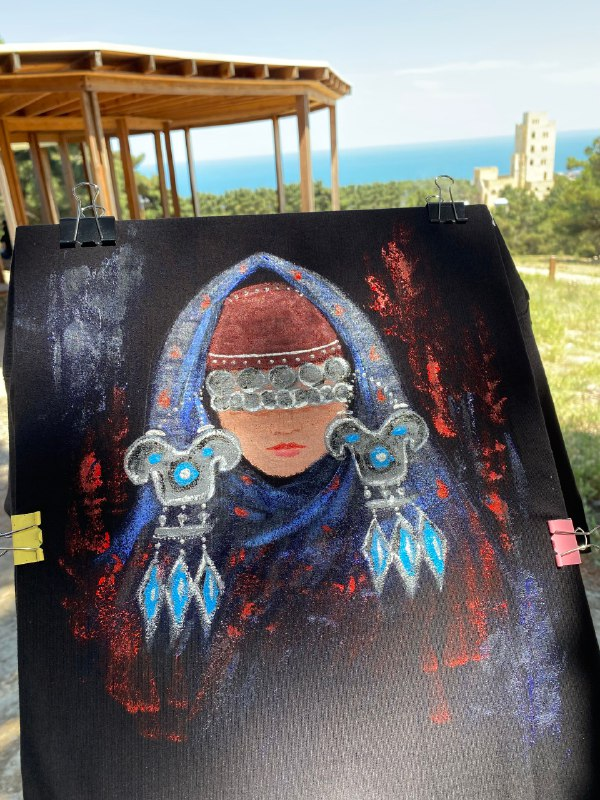
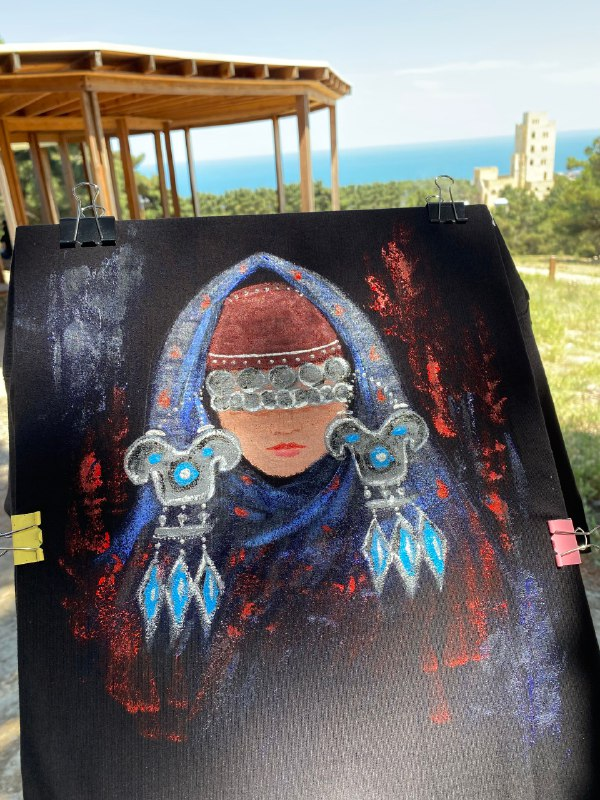
Эмоциональный интеллект.
Живопись помогает лучше понимать свои
эмоции и выражать их через цвета и формы.
Также она учит воспринимать чувства других людей, что способствует развитию эмпатии.
Развитие мелкой моторики и внимания.
Работа с кистями, красками
и мелкими деталями картины
тренирует мелкую моторику, улучшает координацию движений и повышает концентрацию внимания.
Саморазвитие и уверенность в себе.
Каждая новая завершённая
картина —
это шаг к совершенствованию навыков и росту уверенности в своих силах.
Почему мастер-классы по живописи очень популярны
В мире искусства мастер-классы по живописи приобрели огромную популярность в последние годы. Это не случайность, ведь проведение мастер-классов не только обучает участников технике рисования, но и способствует развитию творческого потенциала, стрессоустойчивости и эмоционального благополучия. Давайте разберемся, почему мастер-классы по живописи столь привлекательны для людей разных возрастов и профессий.
Творческое самовыражение.
Одной из основных причин популярности
мастер-классов по живописи является
возможность творческого самовыражения. Рисуя картины, участники мастер-классов могут выразить свои
мысли, чувства и внутренний мир через цвета, линии и формы.
Это помогает им раскрыть свой творческий потенциал, независимо от уровня подготовки.
Развитие навыков.
Участие в мастер-классах по живописи
способствует развитию различных навыков.
Во-первых, обучение технике живописи улучшает моторику рук, координацию движений и визуальное
восприятие.
Во-вторых, участники могут освоить новые приёмы и техники рисования, что расширит их художественный
арсенал.
Мастер-классы по живописи для взрослых и детей
Снятие стресса и релаксация.
Участие в мастер-классах по живописи
позволяет людям снять стресс и насладиться моментом творчества.
Рисование способствует расслаблению, улучшает настроение и позволяет отвлечься от повседневных
проблем. Это прекрасный способ провести время с пользой для психического здоровья.
 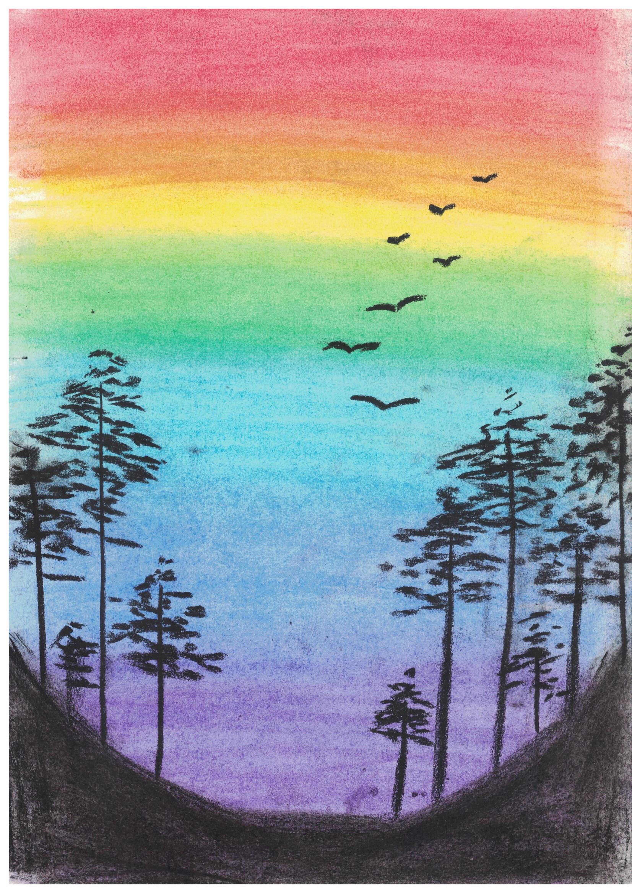
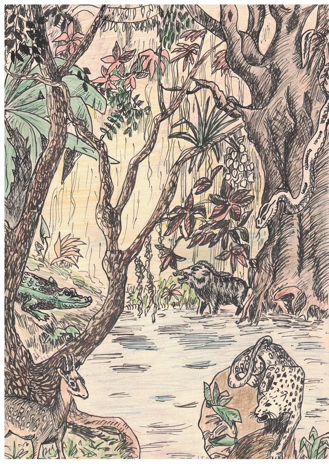
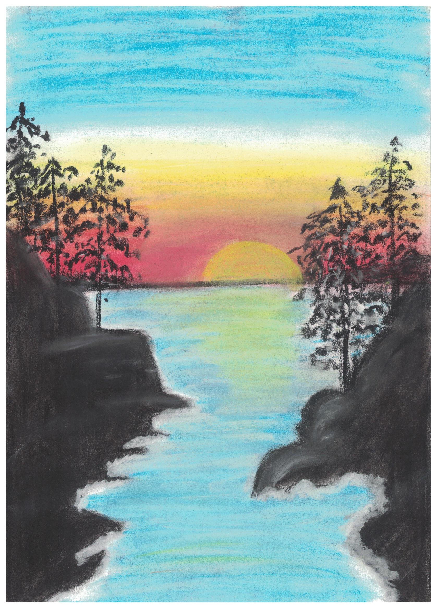
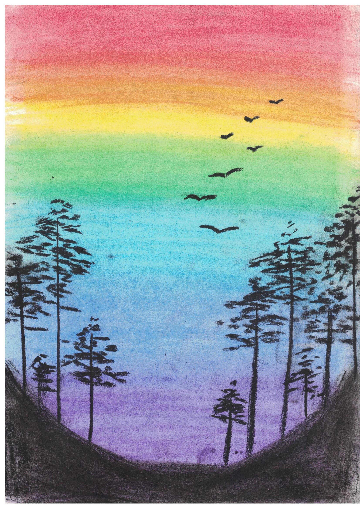
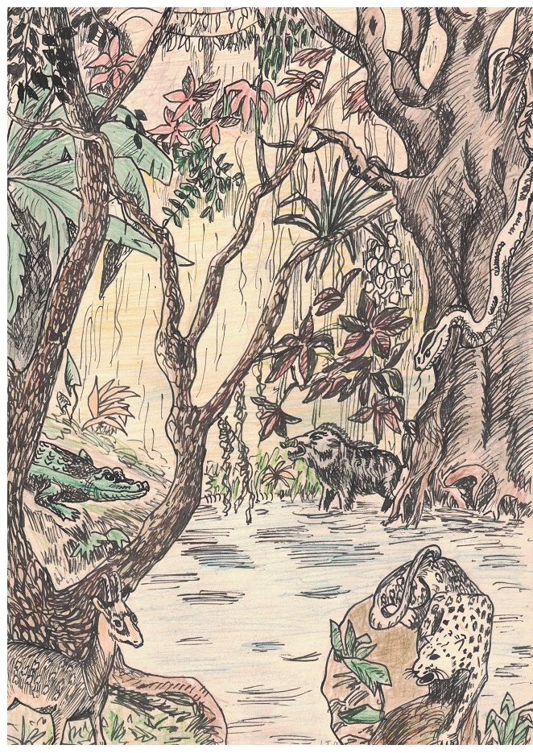
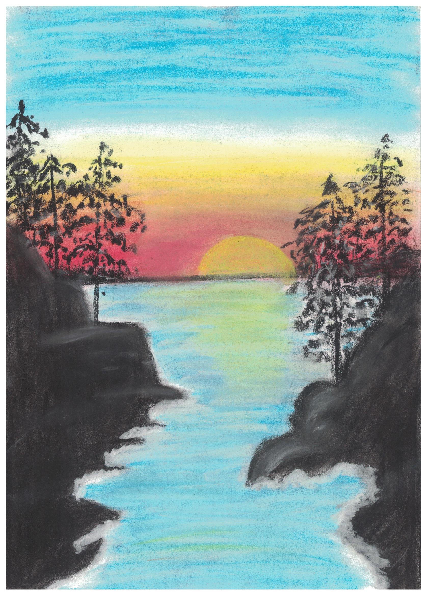
Социализация и общение.
Еще одним фактором популярности
мастер-классов по живописи является возможность социализации и общения с единомышленниками.
Участники могут обмениваться опытом, делиться вдохновением и знаниями, а также находить новых друзей
в искусствоведческом сообществе.


Обогащение внутреннего мира.
Участие в мастер-классах по живописи
помогает людям обогатить свой внутренний мир.
Художественное творчество позволяет увидеть мир по-новому, обрести глубокий внутренний покой и
насладиться красотой окружающего нас мира.
 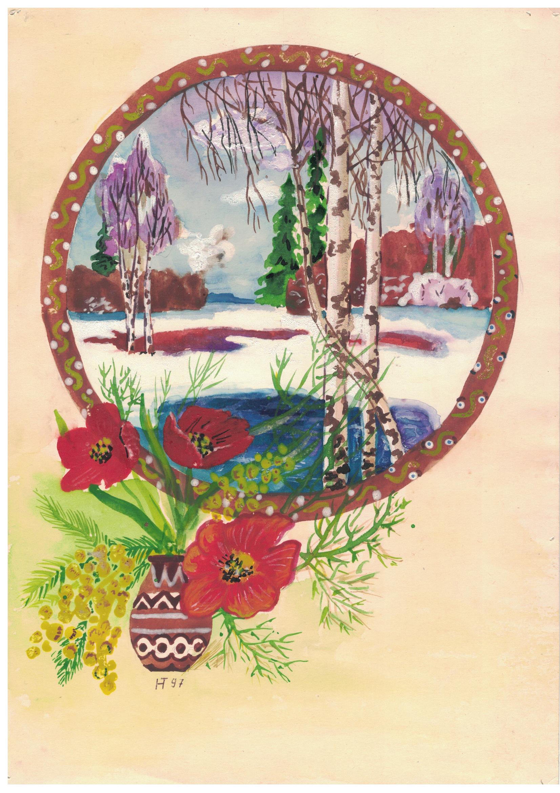
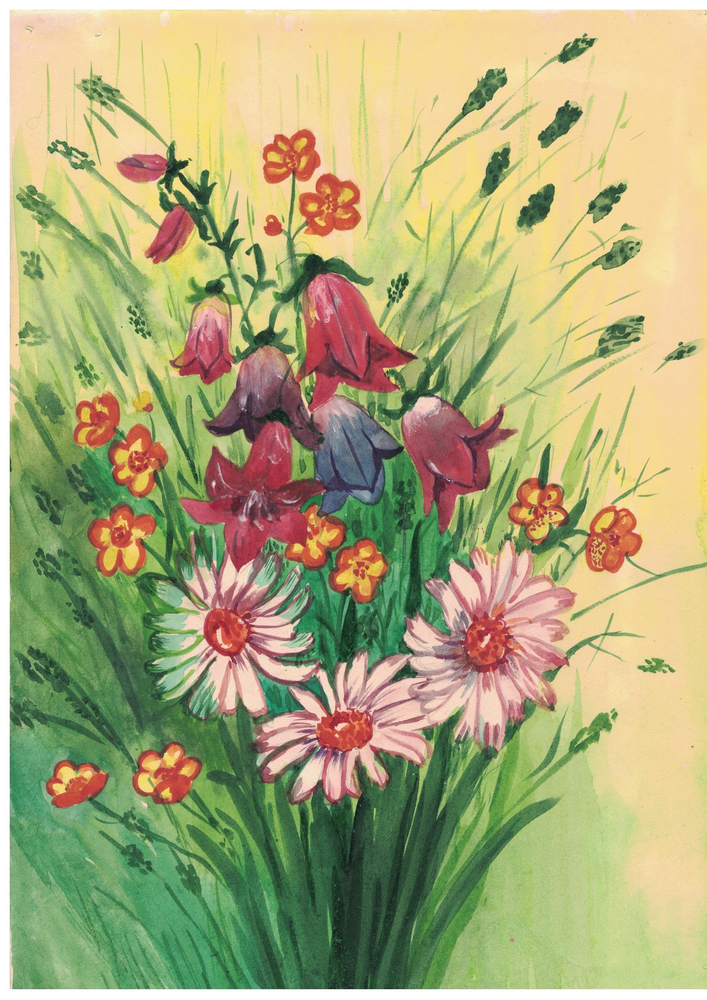
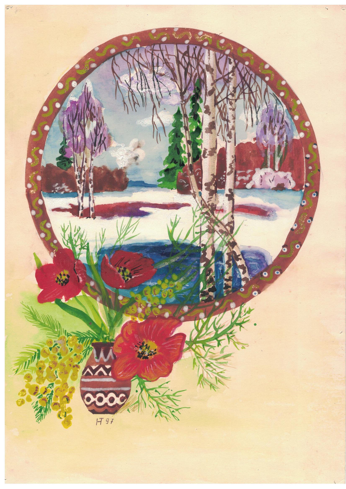
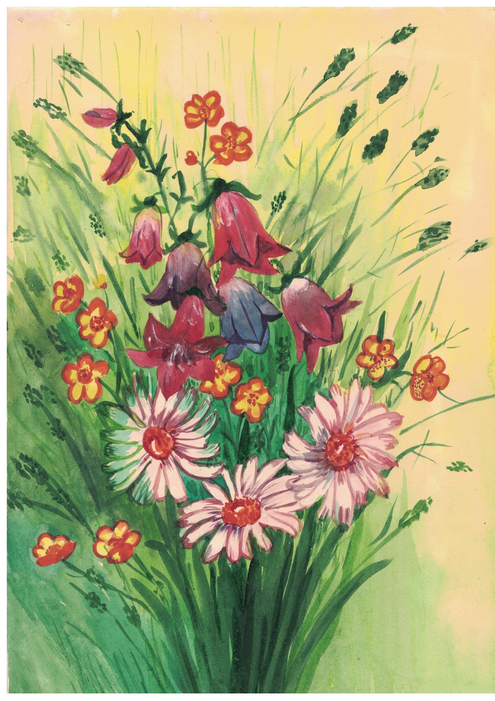